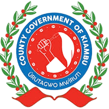

About Us
Background and Mission
Background
BanSoko was created to solve real challenges faced by banana farmers in Githunguri and nearby areas in Kenya.
While banana farming is common, many farmers earn very little due to:
- Reliance on middlemen and low raw-banana prices
- Limited access to markets, tools, and information
- High post-harvest losses during peak seasons
Yet bananas are widely consumed in Kenya—presenting a strong opportunity for processing and value addition.

Our Mission
We build a smart, sustainable, and inclusive banana value chain.
- Empower farmers with training, tools, and smart agronomy
- Reduce waste through processing: snacks, flour, juices, cosmetics
- Create access to fair, direct markets locally and beyond
- Champion youth and women across the value chain
Why It Matters
- Stronger rural economies and dignified livelihoods
- Job creation and entrepreneurship opportunities
- Healthier food choices and resilient communities
- Environmental stewardship for future generations
We are planting the seeds for a better future—one banana at a time.

Ready for the Future
By combining smart agriculture, community collaboration, and sustainable innovation, BanSoko is reimagining banana farming not just as a crop, but as a driver of change.
Leadership Vision

Hon. Gathoni Wamuchomba, EGH, MP
Founder and Patron, BanSoko Initiative
The BanSoko initiative is driven by the leadership vision of Hon. Gathoni Wamuchomba, the Member of Parliament for Githunguri Constituency and a strong advocate for agriculture-led community development.
As a long-time champion for farmers, women, and youth, Hon. Wamuchomba believes that true development begins when local people are empowered to grow their own wealth. Her goal is to help communities shift from subsistence farming to agribusiness, where agriculture is not just a way to survive, but a tool to create jobs, generate income, and improve lives.
Her leadership vision is built on the following core beliefs:
- Farming is a dignified profession and should be supported with knowledge, technology, and investment.
- Women and youth must be at the center of agricultural transformation and economic growth.
- Banana farming has great potential to fight poverty, create jobs, and build sustainable rural economies.
- Value addition and smart farming are the keys to reducing post-harvest losses and unlocking higher incomes for farmers.
- Community-based projects should align with national goals and global development targets like the Sustainable Development Goals (SDGs).
Through BanSoko, Hon. Wamuchomba is putting her vision into action by:
- Promoting smart banana farming in Githunguri and beyond
- Supporting the setup of banana processing hubs to reduce waste and increase value
- Creating platforms for youth and women to learn, lead, and thrive in agribusiness
- Encouraging public-private partnerships that bring long-term development to the grassroots
Hon. Wamuchomba's leadership is grounded in service, compassion, and results. She believes in leading with purpose, listening to the people, and using policy and innovation to solve real problems, especially for farmers and vulnerable groups.
BanSoko reflects her deep commitment to building a future where no farmer is left behind and where communities can grow together through smart, inclusive, and sustainable agriculture.
Our Partners
BanSoko works with a wide range of institutional and community partners who share in our mission to build a better banana economy:
- Local farmer groups and cooperatives organize production, marketing, and farmer mobilization
-
 Agricultural Sector Development Support Programme II (ASDSP II) provides technical assistance, training systems, and program alignment
Agricultural Sector Development Support Programme II (ASDSP II) provides technical assistance, training systems, and program alignment
-  The County Government of Kiambu supports us with agricultural extension services and local infrastructure
- Jomo Kenyatta University of Agriculture and Technology (JKUAT) contributes research and innovation in banana fibre and agronomy
-
 The Kenya Agricultural and Livestock Research Organisation (KALRO) advises on sustainable pest and disease control methods
The Kenya Agricultural and Livestock Research Organisation (KALRO) advises on sustainable pest and disease control methods
- Youth and women's groups lead the fibre extraction, tailoring, and sanitary product production processes
- Public participation forums, school outreach, and farmer days continue to grow awareness and community ownership
We are also exploring partnerships with international buyers, exporters, and technology providers to expand our impact beyond the county.
How We Work

We support farmers from land preparation to processing and market access:
- Training: intercropping, organic pest control, smart irrigation
- Seedlings: FHIA 17 and Giant Cavendish for quality and resilience
- Post-harvest: ripening chambers stabilize prices and quality
- Processing: fibre extraction and value-added manufacturing
- Circularity: composting and organic fertilizer from waste
Our circular model reduces waste, builds skills, and grows long-term participation in markets.
United Nations Sustainable Development Goals
BanSoko is designed with a clear alignment to the following United Nations Sustainable Development Goals (SDGs):
- SDG 1 – No Poverty: by creating jobs and raising rural household incomes
- SDG 2 – Zero Hunger: by increasing banana availability and food access
- SDG 5 – Gender Equality: by involving women in leadership, production, and fibre-based enterprises
- SDG 8 – Decent Work and Economic Growth: by targeting more than 1,000 new jobs across farming, processing, and tailoring
- SDG 9 – Industry, Innovation, and Infrastructure: by establishing ripening centres, fibre units, and tailoring workshops
- SDG 12 – Responsible Consumption and Production: by turning more than 70 percent of banana plant waste into useful products
- SDG 13 – Climate Action: by encouraging regenerative agriculture, composting, and low-impact production methods
Internal assessments also show strong potential for growth in the organic fertilizer, textile, and sanitary pad markets, both locally and for export. As the initiative expands, we are exploring digital tools and e-commerce platforms to help farmers and processors reach new markets.
BanSoko is more than a farming project. It is a long-term, community based transformation strategy that brings together economic development, environmental care, and social inclusion powered by the banana.
Ready to be part of our story?
Join thousands of farmers, partners, and supporters who are transforming banana farming in Kenya.
Join the Movement